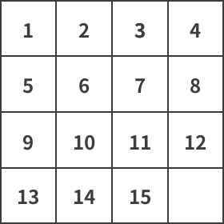

OI Wiki · prijevod · RaznoOI Wiki · translation · Miscellaneous
15-puzzle15-puzzle
Sadržaj
Uvod
Slagalica 15 (engl. 15-puzzle, poznata i kao Gem Puzzle, Boss Puzzle, Game of 15, Mystic Square, N-puzzle itd.) igra je s kliznim pločicama (engl. sliding puzzle). Ploča ima dimenzije \(4\times 4\) polja; na 15 polja nalaze se pločice s izmiješanim rednim brojevima, a jedno je polje prazno. Pločice u istom retku ili stupcu kao prazno polje mogu se pomicati vodoravnim ili okomitim klizanjem. Cilj slagalice je rasporediti pločice po redu brojeva.
Slagalica 15 često se naziva i slagalica n, pri čemu se broj \(n\) odnosi na ukupan broj pločica na ploči. Varijante slagalice 15 drugih dimenzija imaju slična imena, npr. slagalica \(8\) odnosi se na \(8\) pločica na ploči \(3\times3\). No slagalica \(15\) može se zvati i slagalica \(16\), pri čemu se 16 odnosi na broj polja. Njezina poopćenja ponekad uključuju i klizne ploče dimenzija \(n \times m\).
Slagalica 15 klasičan je problem za modeliranje heurističkih algoritama. Uobičajeni oblici su manhattanska udaljenost i broj pločica na krivom mjestu; obje su dopustive heuristike (engl. admissible heuristic), tj. nikad ne precjenjuju preostali broj poteza, što jamči optimalnost nekih algoritama pretraživanja (npr. algoritma A*).
Napomena
Igre s kliznim pločicama vrsta su logičkih igara u kojima se pločice klizanjem po ravnini slažu u određeni raspored. Uobičajene igre s kliznim pločicama uključuju brojčane slagalice, Huarong Dao (华容道, kinesku kliznu slagalicu) i Rush Hour. Slagalica 15 najstarija je od njih; izumio ju je Noyes Chapman, a igra je postala vrlo popularna 1880-ih. Za razliku od drugih logičkih igara tipa „obilazak” (tour), u igrama s kliznim pločicama nijedna pločica ne smije napustiti ploču, što ih razlikuje od logičkih igara s preslagivanjem.
Definicija
Zadana je ploča \(4 \times 4\) na kojoj je \(15\) pločica proizvoljno raspoređeno. Trebamo ih po rednim brojevima rasporediti kao na slici dolje. Pravilo pomicanja: u jednom potezu smije se zamijeniti samo prazno polje s jednom susjednom pločicom. Uobičajena pitanja su pronaći najmanji broj poteza kojima se slagalica rješava, izračunati broj pločica na krivom mjestu ili utvrditi može li se uopće doći do konačnog uređenog rasporeda.

Dokaz rješivosti
Johnson i Story (1879.) dokazali su da obrat vrijedi za ploče dimenzija \(m\times n\) ako su \(m\) i \(n\) barem \(2\): indukcijom po \(m\) i \(n\), počevši od \(m=n=2\), dokazuje se da su sve parne permutacije rješive. Archer (1999.) dao je drugi dokaz, zasnovan na definiranju klasa ekvivalencije pomoću Hamiltonovih putova.
Algoritmi
Pronaći neko rješenje slagalice s brojevima razmjerno je lako, ali pronalaženje optimalnog rješenja NP-težak je problem. Optimalno rješenje slagalice 15 ima najviše 80 poteza, a optimalno rješenje slagalice 8 najviše 31 potez.
Na slagalicu n mogu se primijeniti uobičajeni algoritmi pretraživanja grafova, kao što su pretraživanje u širinu i pretraživanje u dubinu, a za pronalaženje optimalnog rješenja možemo koristiti i algoritam pretraživanja A*. Heuristička funkcija \(h(n)\) može biti
- broj pločica na krivom mjestu;
- zbroj euklidskih udaljenosti svih pločica na krivom mjestu do njihovih ciljnih položaja;
- zbroj manhattanskih udaljenosti svih pločica na krivom mjestu do njihovih ciljnih položaja.
Teorija grupa
Budući da se kombinacije slagalice s 15 pločica mogu generirati „3-ciklusima” (engl. 3-cycles), može se dokazati da se slagalica s 15 pločica može prikazati alternirajućom grupom \(A_{15}\). Zapravo, svaka klizna slagalica s \(2\times k-1\) jednakih kvadratnih pločica može se prikazati alternirajućom grupom \(A_{2k-1}\).
Zadaci za vježbu
Literatura i dodatno čitanje
- 15 puzzle - Wikipedia
- jrdnjacobson, How to Solve the 15 Puzzle - instructables
- Korf, R. E. (2000), "Recent Progress in the Design and Analysis of Admissible Heuristic Functions", u: Choueiry, B. Y.; Walsh, T. (ur.), Abstraction, Reformulation, and Approximation (PDF), SARA 2000. Lecture Notes in Computer Science, sv. 1864, Springer, Berlin, Heidelberg, str. 45–55, doi:10.1007/3-540-44914-0_3, ISBN 978-3-540-67839-7, pristupljeno 26. travnja 2010.
- Welcome to N-Puzzle - web demo
Contents
Introduction
The 15-puzzle (also called Gem Puzzle, Boss Puzzle, Game of 15, Mystic Square, N-puzzle, etc.) is a sliding puzzle. The board measures \(4\times 4\) cells; 15 of the cells hold numbered tiles in scrambled order, and the remaining one is empty. Tiles in the same row or column as the empty cell can be moved by sliding them horizontally or vertically. The goal of the puzzle is to arrange the tiles in numerical order.
The 15-puzzle is commonly also called the n-puzzle, where the number \(n\) refers to the total number of tiles on the board. Variants of the 15-puzzle of other sizes use similar names, e.g. the \(8\)-puzzle refers to \(8\) tiles placed on a \(3\times3\) board. But the \(15\)-puzzle can also be called the \(16\)-puzzle, where 16 refers to the number of cells. Its generalizations sometimes also include \(n \times m\) sliding boards.
The 15-puzzle is a classic problem for modeling heuristic algorithms. Common forms of this problem are the Manhattan distance and the count of misplaced tiles; both are admissible heuristics, i.e. they never overestimate the number of remaining moves, which guarantees the optimality of certain search algorithms (e.g. the A* algorithm).
Note
Sliding puzzles are a class of puzzles in which tiles are slid on a plane to form a specific arrangement. Common sliding puzzles include number puzzles, Huarong Dao (华容道, a Chinese sliding block puzzle), and Rush Hour. Among them the 15-puzzle is the oldest sliding puzzle; it was invented by Noyes Chapman and became hugely popular in the 1880s. Unlike other tour-type puzzles, sliding puzzles forbid any tile from leaving the board, a property that distinguishes them from rearrangement puzzles.
Definition
Given a \(4 \times 4\) board on which \(15\) tiles are arranged arbitrarily, we need to arrange them in numerical order as shown in the figure below. The movement rule is that in each move only the empty cell and one adjacent tile may swap positions. Common questions are finding the minimum number of moves that solves the puzzle, counting the number of misplaced tiles, or determining whether the final ordered arrangement can be reached at all.
Proof of solvability
Johnson & Story (1879) proved that the converse holds for boards of size \(m\times n\) if \(m\) and \(n\) are both at least \(2\): by induction on \(m\) and \(n\) starting from \(m=n=2\), all even permutations are solvable. Archer (1999) gave another proof, based on defining equivalence classes via Hamiltonian paths.
Algorithms
Finding a solution of the sliding number puzzle is relatively easy, but finding the optimal solution is an NP-hard problem. The optimal solution of the 15-puzzle has at most 80 moves, while the optimal solution of the 8-puzzle has at most 31 moves.
The n-puzzle supports common graph-based search algorithms, such as breadth-first search and depth-first search, and we can also use the A* search algorithm to find the optimal solution. The heuristic function \(h(n)\) can be
- the number of misplaced tiles;
- the sum of the Euclidean distances of all misplaced tiles to their target positions;
- the sum of the Manhattan distances of all misplaced tiles to their target positions.
Group theory
Because the combinations of the 15-tile sliding puzzle can be generated by 3-cycles, it can be proved that the 15-tile sliding puzzle can be represented by the alternating group \(A_{15}\). In fact, any sliding puzzle with \(2\times k-1\) identical square tiles can be represented by the alternating group \(A_{2k-1}\).
Exercises
References and further reading
- 15 puzzle - Wikipedia
- jrdnjacobson, How to Solve the 15 Puzzle - instructables
- Korf, R. E. (2000), "Recent Progress in the Design and Analysis of Admissible Heuristic Functions", in Choueiry, B. Y.; Walsh, T. (eds.), Abstraction, Reformulation, and Approximation (PDF), SARA 2000. Lecture Notes in Computer Science, vol. 1864, Springer, Berlin, Heidelberg, pp. 45–55, doi:10.1007/3-540-44914-0_3, ISBN 978-3-540-67839-7, retrieved 2010-04-26
- Welcome to N-Puzzle - web demo